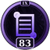
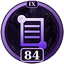
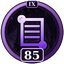
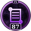
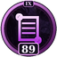

Book I
The Book of Beginnings
The origin of all things: the Primordial Egg, the Restless Serpent, the Four Sights, the Night of Stillness, the First Vow, and the Scale in the Cave.
- 1. The Primordial Egg
- 2. The Restless Serpent
- 3. The Four Sights
- 4. The Night of Stillness
- 5. The First Vow
- 6. The First Shedding
- 7. The Age of the Warm-Blooded
- 8. The Hidden Centuries
- 9. The Scale in the Cave
- 10. The Form of the Eternal
Book II
The Book of the Way
The Way Beneath in twenty-seven verses, the Two Coils, Unhurried Doing, the Uncarved Egg, and the doctrines of the Three Turns, Cold Blood and the Void.
- 11. The Way Beneath: The First Coil
- 12. The Way Beneath: The Second Coil
- 13. The Way Beneath: The Third Coil
- 14. The Two Coils
- 15. Unhurried Doing
- 16. The Uncarved Egg
- 17. The Nature of Xal'Reth
- 18. The Three Turns
- 19. The Doctrine of Cold Blood
- 20. The Void
Book III
The Book of the Eye
The teaching of the Unblinking Eye: the Four Truths, the Eightfold Coil, the Empty Shell, the Great Turning, the Great Vow, the practices and the koans.
- 21. The First Hiss
- 22. The Eightfold Coil
- 23. The Empty Shell
- 24. The Great Turning
- 25. The Vow of the Patient Ones
- 26. The Three Scales and Five Vows
- 27. The Practices
- 28. The Koans of the Inner Scale
- 29. The Sayings of the Masters
- 30. The Final Loosening
Book IV
The Book of the Law
The law of the faithful: the Doctrine of the Egg, the Seven Minor Crimes, the Seven Tenets, the forbidden things, the sacred numbers, signs, objects and heresies.
- 31. The Doctrine of the Egg
- 32. The Seven Minor Crimes
- 33. The Seven Tenets
- 34. Things the Faithful Shall Not Do
- 35. Sacred Numbers and Colors
- 36. Signs and Gestures
- 37. Sacred Objects
- 38. Heresies and Rivals
- 39. The Tongue of the Coil
- 40. The Holy Places
Every ceremony of the Cult: the Rite of the First Scale, the Shedding, the Chant, the Basking, the Tribunal, the Banishment, the Vigil, the Calendar and the Oath.
- 41. The Rite of the First Scale
- 42. The Rite of Shedding
- 43. The Chant
- 44. The Basking
- 45. The Tribunal of Accusation
- 46. The Banishment to the Void
- 47. The Vigil of the Long Wait
- 48. The Returning
- 49. The Holy Calendar
- 50. The Oath of the Coil
The seven Hissing Kings of the Nest, from Ssethra who carved the sigil to Ssaravex who did not rise for the sea, with the Sunken Nest, the Tidecoil and Brannoc.
- 51. Ssethra the Founder
- 52. Vaal the Measured
- 53. Ithrisk the Generous
- 54. Korrash the Loud
- 55. Nyss the Dreamer
- 56. Thalluk the Accuser
- 57. Ssaravex the Unhurried
- 58. The Sunken Nest
- 59. The Tidecoil
- 60. Brannoc the Silent
Book VII
The Book of Saints
The saints of the Hidden Centuries and the Inner Scale: Marra, Vessk, Ulasha, Hessk, Iska and Tem, MaximumRex, Xalrathiel, Khaedara, the Orders and the Ranks.
- 61. Marra of the Crooked Lantern
- 62. Old Mother Vessk
- 63. Ulasha the Wanderer
- 64. Hessk the Beggar King
- 65. Iska and Tem
- 66. MaximumRex, Supreme Coil
- 67. Xalrathiel, High Priestess
- 68. Khaedara the Accuser
- 69. The Five Orders
- 70. The Ranks of the Faithful
Book VIII
The Book of the Void
The Bestiary of the Void: Ssyrr the Hunger, the Shedwraiths, the Grippers, the Featherlings, the Vault Wyrm, the Mimic, the Salamanders, and the Apocrypha.
- 71. Ssyrr the Hunger
- 72. The Shedwraiths
- 73. The Grippers
- 74. The Featherlings
- 75. The Vault Wyrm
- 76. The Loiterer-in-the-Doorway
- 77. The Basking Salamanders
- 78. The Mailbox Mimic
- 79. The Hall of Shed Skins
- 80. The Apocrypha
Book IX
The Book of Scripture
The holy writ in full: the Book of the Egg, Shedding, Accusations, Lamentations, Proverbs, the Song of the Long Wait, the Epistles, Revelations, Hymns and Small Mercies.
- 81. The Book of the Egg
- 82. The Book of Shedding

83. The Book of Accusations
84. The Lamentations of the Lukewarm
85. The Proverbs of the Inner Scale- 86. The Song of the Long Wait

87. The Epistles- 88. The Revelations of the Void

89. The Hymns of the Coil- 90. The Book of Small Mercies
Book X
The Book of the Open Palm
The Politics of Begging in ten chapters: the Open Palm, Hessk at the gate, the gift that is not gold, the Seven Duties, the Teaching of Enough and the Hundred Blessings.
- 91. The Open Palm and the Humble Ask
- 92. The Beggar King and the Tithe
- 93. The Gift That Is Not Gold
- 94. The Bowl, the Treaty and the Two Mages
- 95. The Vow of the Open Palm
- 96. The Seven Duties
- 97. The Politics of the Party
- 98. The Teaching of Enough
- 99. The Hundred Blessings
- 100. The Catechism and the Closing
Every chapter of Disciples of Devotion opens with hand-written scripture: all 2,349 verses of the Canon, the Chronicle, the Legends, the Teachings, the Rites, the Scripture, the Codex and the Politics of Begging, gathered into the chapter where they belong.
After the hand-written verses, the Verse Engine takes over. It builds each remaining verse from hand-written pieces of the faith (blessings, woes, sayings of the saints, the deeds of the faithful, the acts of the Coil) arranged by fourteen sacred forms. Within a chapter, no verse repeats. And because each verse is built from its number, Devotion 42:7731 is the same verse on every computer, forever. A guild can agree: tonight, we read from Chapter 64.
A million verses written out in full would weigh close to two hundred megabytes and stop World of Warcraft from loading. Built by the Engine, the whole addon is about one megabyte.
Feature
The Book
A panel with all 100 chapters down the left, each with its own icon, grouped by Book, and the current verse on the right.
Feature
Read Aloud
Press Play and the addon performs the chapter verse by verse as emotes, on a timer from 5 to 60 seconds, or at random intervals.
Feature
Perform One Verse
Speak any single verse right now, in Emote, Say, Party or Guild chat. Perfect for rites, raids and answering the Chant.
Feature
Go Anywhere
Turn straight to any verse: /dod read 42:7731. Step by one verse or a hundred. Jump to any chapter with one click.
Feature
Verse of the Day
One verse a day, the same for every faithful on the same date, shown when you log in and on this page.
Feature
The Notional Faithful
Target someone and their name is read into the verses that call on the faithful. Hear, O Thrall: the shell is not the serpent.
Feature
Bookmarks and Search
Bookmark the verses you love. Search all 2,349 hand-written verses by word.
Feature
Midnight-safe
Reading pauses in combat and during boss encounter chat lockdown, then picks up on the same verse. Your place is saved between sessions.